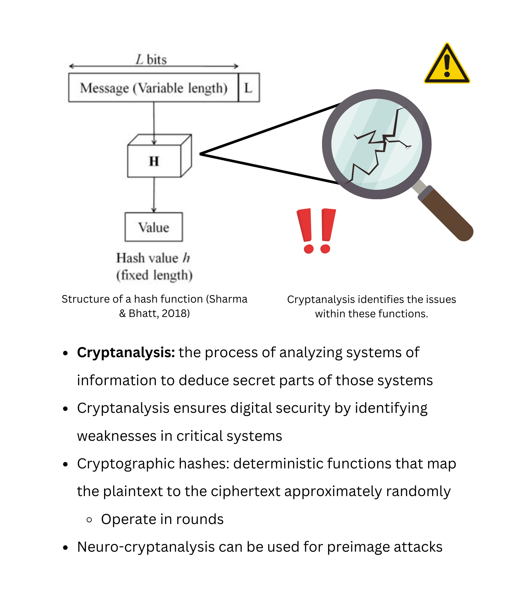
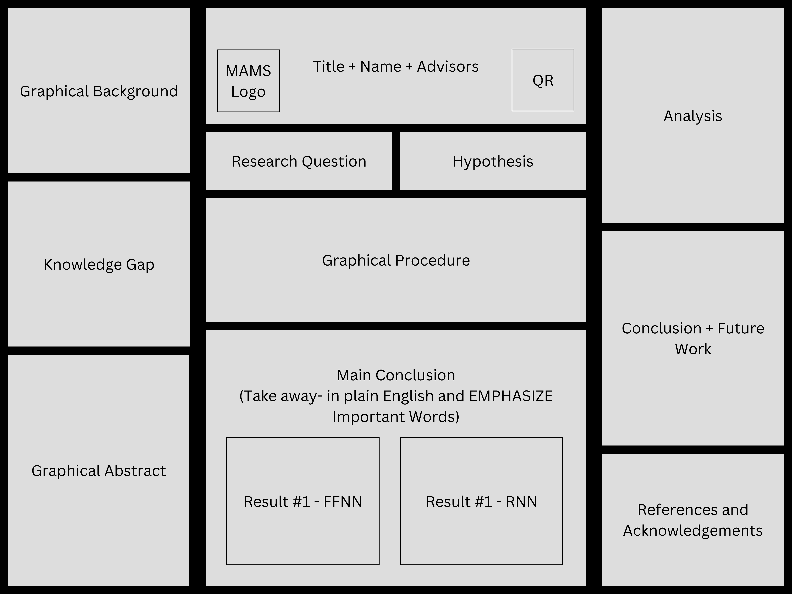

public class
STEM I
{
public static void main (String[] args) {
}
String about =
" STEM I is taught by Dr. Crowthers. We conduct a 5-month independent research project on a topic of our choosing, culminating in a presentation at February Fair. My project is described below." ;
" STEM I is taught by Dr. Crowthers. We conduct a 5-month independent research project on a topic of our choosing, culminating in a presentation at February Fair. My project is described below." ;
}
Using Neural Network Chains to Launch a Preimage Attack on Reduced-Round SHA-1
Overview
The goal of my project was to develop a new cryptanalytic technique for preimage attacks to take advantage of the rapidly-advancing fields of machine learning. It attempted to deconstruct the hash using neural network chains, but this approach was ultimately unsuccessful due to a fundamental theoretical issue described in the analysis.
Abstract
As the world becomes increasingly online, digital protection becomes increasingly important, necessitating the development of new cryptanalytic techniques. To achieve this, one rapidly developing field of computer science, machine learning, could potentially be made use of. This paper investigated whether neural networks can be used to conduct a preimage attack, in which the original input of a cryptographic hash is extracted given the output. We launched an attack on the hash SHA-1 with neural network chains, which decreased the load on each individual neural network and simultaneously allowed reconstruction of the internal state history and extraction of the preimage. Neural networks of various architectures were constructed and trained on generated, sequential internal state data. Networks corresponding to adjacent rounds were then linked together to result in a preimage attack on reduced SHA-1 as described. The attack was not effective, although results could potentially be improved with larger computational power. Although machine learning and cryptanalysis share many similarities, it is hence more valuable to focus on the development of other cryptanalytic techniques, at least in the area of preimage attacks.
Graphical Abstract

Research Question
Can neural networks be used to conduct a preimage attack?
Hypothesis
Linking together multilayer feed-forward neural networks that are individually trained on data from each round of the cryptographic hash SHA-1 will reduce the complexity each network needs to model, allowing reconstruction of the internal state history and extraction of the preimage.
Graphical Background

Background
Graphical Procedure
Procedure
Figures
Table 1. Accuracies and loss for multilayer feed-forward neural networks with varying hyperparameters and training datasets
Table 2. Accuracies and loss for recurrent neural networks with varying hyperparameters and training datasets
Figure 1. Generated training data of SHA-1 internal states, stored in hexadecimal
Figure 2. Results output for FFNN trained on round 3 data with a standard 100k dataset; results are very similar for RNN
Analysis
Discussion and Conclusion
References
February Fair Poster
Below is my poster layout and design.
